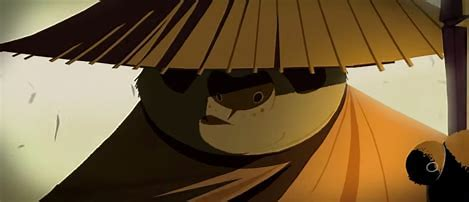
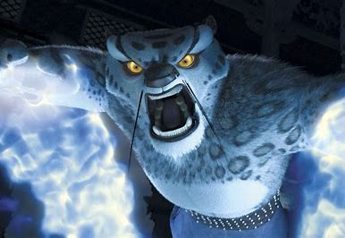
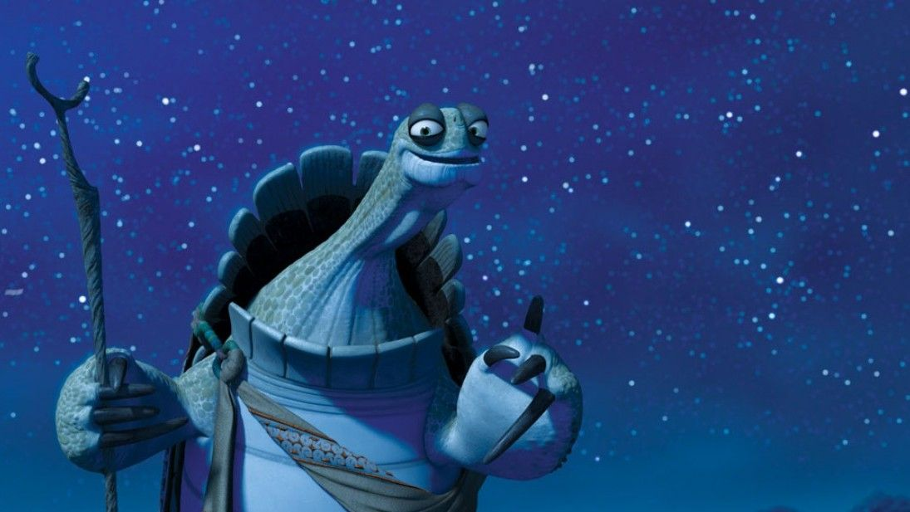

Po's Begining
Po always wanted more out of making noodles in his dad's shop. Obsessed with the Furious Five and being a kung fu expert he finds himself crash landing the ceremony being held to find the dragon warrior. To everyone's suprise, Oogway announces it's him, leaving Po confused yet astounded. After finally believing in himself he becomes excellent at the art, and prepares to beat Tai.
The Villian
Tai Lung was once loved and raised by master Shifu. Grown to be one of the strongest kung fu experts he had too much pride. When told he wasn't the the Dragon warrior he became what he had hidden; evil.
The Turtle of Wisdom
Oogway, the glue that held together shifu, was the creator of kung fu. He had endless wisdom and inner peace to offer which could frustrate those who were bound to control and stress. When he chooses the Dragon warrior he passes on, leaving shifu to his destiny.